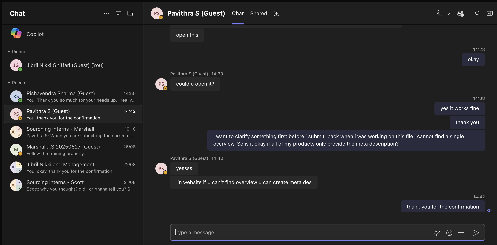

Photo caption: drafting product documentation.
[WRITER'S NOTE] In mid-2025, i joined GAOTek Inc., a New York-based technology company specializing in test-and-measurement, IoT, and embedded technology, as a remote Technical Writer / AI Tech Intern. The internship gave me the opportunity to work with technical product information while learning how raw supplier data could be transformed into structured, customer-facing documentation.
One of my responsibilities was researching and preparing product documentation for GAOTek's catalog. I worked with products sourced from platforms such as Alibaba and used additional tools for product research and verification. The workflow involved finding relevant products, comparing their specifications, checking technical information, and organizing the results into a standardized format. For example, one of the product categories i worked on was Handheld Ultrasonic Flow Meters, where i processed information such as measurement range, accuracy, supported pipe sizes, connectivity, operating temperature, protection rating, materials, and other technical specifications.